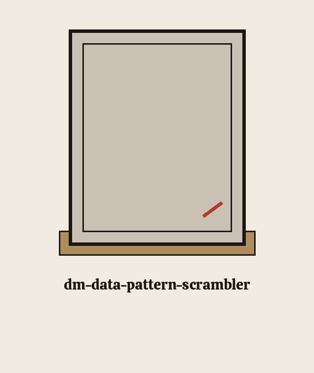
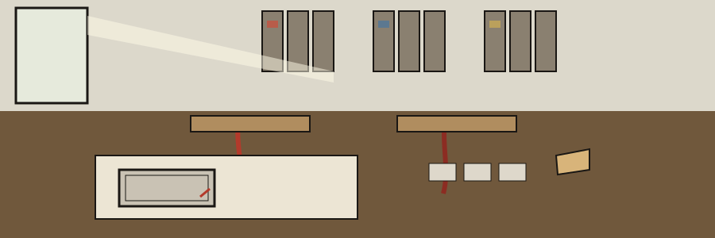

A collector catalogue, one entry per plate, worked through in the order a cataloguer would open a newly arrived box of secondhand books. One open book on the shop table shows a bookplate with an empty centre. The library is implied. The name is not.


Replaces identifiable patterns (e.g., phone number formats, credit card patterns) with random but valid patterns of the same type. Useful for masking data that adheres to known formats, ensuring compliance while rendering the data unusable. - Focused on Tools designed to generate or mask sensitive data with realistic-looking but meaningless values
Identifiable patterns, with phone formats and card patterns named as examples, are replaced by random but valid patterns of the same type, so formatted data is masked, compliance is supported in the words of the description, and the result is rendered unusable as original data.
Corrected line: git clone https://github.com/ShadowGuard-AI/dm-data-pattern-scrambler
Correction note: the README form drops the hyphen from the current organisation spelling. The published README line is preserved verbatim in the record block at the foot of this page. This corrected line is labelled as a correction, here and nowhere else.
./dm-data-pattern-scrambler [params]
This entry shows the invocation shape only. It shows no sample phone pattern, no sample card pattern, and no scrambled example of any kind.
The p control and the l control are recorded as undescribed absences. No description is invented for either of them on this page.
Credit card numbers are scrambled in these forms: contiguous runs of 13 to 19 digits, dashed groups of four, and spaced groups of four. Digit boundary guards keep a run longer than 19 digits from being partly scrambled: such a run is left unmatched as a whole rather than masking a prefix and leaving the rest in the output.
Contiguous runs of 13 to 19 digits count as card numbers. Dashed groups of four count. Spaced groups of four count. A digit run longer than 19 is left unmatched as a whole. Digits on this page appear as lengths and counts only. No digit string is printed.
The output file must not be the input file. If the resolved output path equals the resolved input path, the run refuses at exit 1 before any write, including when the same file is named through a ./ alias or a symlink.
Output must not be input. When the resolved output path equals the resolved input path, the run refuses at exit 1 before any write, including when the same file is reached through a ./ alias or a symlink.
First: the repository LICENSE file carries MIT terms. Its holder is reported by shape only: a run of years, a given name, a family name trailing it, a shorter form tucked inside round brackets and holding one initial, then a handle in square brackets.
Second, labelled as the README record line: Copyright (c) ShadowGuardAI, preserved as published, with its unhyphenated organisation spelling. The catalogue never merges the two statements.
A link in this library announces itself with an index tab poking up at its head. A run stopped by the boundary guard earns its card a small uncut wax dot in the corner. Every other state goes dotless.
 # dm-data-pattern-scrambler Replaces identifiable patterns (e.g., phone number formats, credit card patterns) with random but valid patterns of the same type. Useful for masking data that adheres to known formats, ensuring compliance while rendering the data unusable. - Focused on Tools designed to generate or mask sensitive data with realistic-looking but meaningless values ## Install `git clone https://github.com/ShadowGuardAI/dm-data-pattern-scrambler` ## Usage `./dm-data-pattern-scrambler [params]` ## Parameters - `-h`: Show help message and exit - `-p`: No description provided - `-l`: No description provided - `-f`: Path to a file to scramble. Overrides input_text argument if present. - `-o`: Path to the output file. If not provided, prints to stdout. ## Credit card patterns and output path Credit card numbers are scrambled in these forms: contiguous runs of 13 to 19 digits, dashed groups of four, and spaced groups of four. Digit boundary guards keep a run longer than 19 digits from being partly scrambled: such a run is left unmatched as a whole rather than masking a prefix and leaving the rest in the output. The output file must not be the input file. If the resolved output path equals the resolved input path, the run refuses at exit 1 before any write, including when the same file is named through a ./ alias or a symlink. ## License Copyright (c) ShadowGuardAI